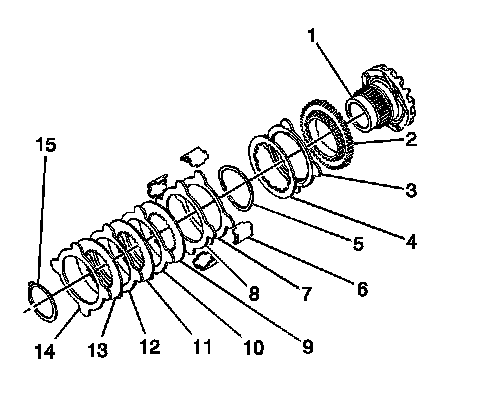

Locking Differential Cam Unit Assemble (8.6 Inch Axle)
Locking Differential Cam Unit Assemble (8.6 Inch Axle)

1. Apply axle lubricant, GM P/N 12378261 (Canadian P/N 10953455) or equivalent meeting GM Specification 9986115, to the surface of each disc.
2. Assemble the left side or the flange-end side locking differential side gear cam unit and clutch disc assembly as follows:
1. Install the cam plate (2) to the cam side gear (1).
2. Install the carbon-faced eared disc (3).
3. Install the fuse disc (4).
4. Install the 1st non-carbon eared disc (7).
5. Install the 2nd non-carbon eared disc (8).
6. Install the wave washer (5).
7. Install the 1st splined disc (9).
8. Install the 3rd non-carbon eared disc (10).
9. Install the 2nd splined disc (11).
10. Install the 4th non-carbon eared disc (12).
11. Install the 3rd splined disc (13).
12. Install the 5th non-carbon eared disc (14).
13. Install the retaining ring (15).
Compress the clutch disc assembly and align the teeth on the 3rd splined disc with the teeth on the cam plate in order to seat the retaining ring in the groove on the cam side gear.
14. Install the guide clips (2) to the clutch disc assembly.
Apply chassis grease, GM P/N 12377985 (Canadian P/N 88901242) or equivalent, to the guide clips in order to hold the clips in place on the disc ears.